DSC 2014
R Basic Tutorial
Dboy
Taiwan UseR Group for Hackers
Why R?
Why Not R?
- 1. It is FREE!
- 2. It is open!
- 3. It is popular! Kaggle
- 4. It is powerful!
It is cool to be a hacker!!
圖片來源
Our Goal: Become a Cool Guy!
Mini Project I: Barnsley Fern Fractal
Work this cool picture out.
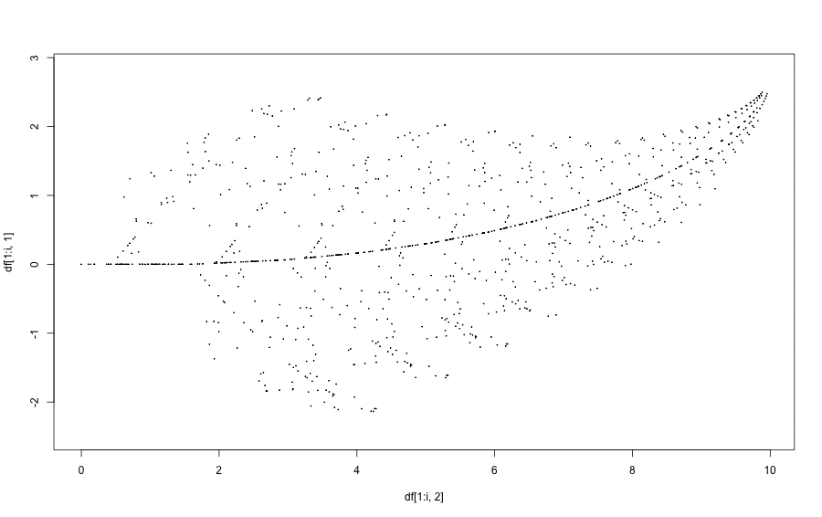
Mini Project I: Barnsley Fern Fractal
Work this cool picture out.
And you can claim that you can do sketch by a computer!
Mini Project II: Battleship
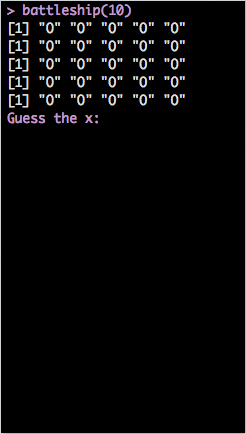
最後讓我們打個廣告XDD
接下來的系列課程:
- ETL
- Data Analysis
- Data Visulization
最後讓我們打個廣告XDD
接下來的系列課程:
- ETL
- Data Analysis
- Data Visulization
最後讓我們打個廣告XDD
接下來的系列課程:
- ETL
- Data Analysis
- Data Visulization
最後讓我們打個廣告XDD
接下來的系列課程:
- ETL
- Data Analysis
- Data Visulization
最後讓我們打個廣告XDD
接下來的系列課程:
- ETL
- Data Analysis
- Data Visulization
在今天的課程裡也會讓大家體驗一下每個課程的主題是什麼。
Syllabus
Syllabus
- DATA: Where the Story Begins
- 資料屬性
- 資料形態
- Basic Operations - Phase I
- Logical Operations: &, |, ==
- Subsetting - Phase I
- Vector and List
- Matrix Subsetting - Phase I
- Data Frame Subsetting - Phase I
- Subsetting - Phase II
- Matrix Subsetting - Phase II
- Data Frame Subsetting - Phase II
- Merging
- cbind v.s rbind
- Basic Operation - Phase II
- Arithmetic Operations
- Loop
- for
- if/else if/else
- while
- Function
- Mini Project
- Barnsley Fern Fractal
- Battleship
package: DSC2014Tutorial
For the best tutorial experience:
library("DSC2014Tutorial")
Data: Where the Story Begins
DATA
以資料屬性來分：
- Character (字串)
- Integer (整數)
- Numeric (雙浮點數 / 實數)
- Logical (邏輯值)
- Complex (複數)
以資料形態來分：
- 一般變數
- Vector
- Matrix
- Factor and Data Frame
Examples
(x <- 'R is easy to learn!') # 這是字串
(y <- 3) # 這是整數
(z <- pi) # 圓周率
## [1] "R is easy to learn!"
## [1] 3
## [1] 3.142
Examples
(k <- 1 + 2i) # 複數
(boo1 <- TRUE) # TRUE (or T for short)
(boo2 <- FALSE) # FALSE (or F for short)
## [1] 1+2i
## [1] TRUE
## [1] FALSE
Logical Operation
Basic Operations: & (and), | (or), ==
bol1 <- T; bol2 <- TRUE
bol3 <- F
('Dboy' == 'Dboy')
[1] TRUE
(bol1 == bol2)
[1] TRUE
(bol1 & bol2)
[1] TRUE
(bol3 | 4 > 5)
[1] FALSE
Basic Operations: >, <, >=, <=
4 > 2
[1] TRUE
1 >= 2
[1] FALSE
a <- NA
a == NA # 要用is.na(a)才會傳回TRUE或FALSE。(另外還有is.nan())
[1] NA
is.na(a)
[1] TRUE
Fun Time
猜猜看答案會是多少? (sum 是 R 中的內建函式，用以求和。)
my_vec <- c(1, 2, 5, 90, 37)
ind <- my_vec >= 5
sum(ind)
- 135
- 3
- 132
- None of above.
(sum(c(T, F, T)))
## [1] 2
my_vec <- c(1, 2, 5, 90, 37)
ind <- my_vec >= 5
sum(ind)
## [1] 3
Subsetting Phase I: Index
Vector and List
Vector
c(): concatenation function
範例：
vec1 <- c(1, 2, 3)
vec2 <- c('a', 'b', 'c')
vector 中所有元素都必須是同一種資料屬性。
Named Vector:
(Bob <- c(age = 27, height = 187, weight = 80))
## age height weight
## 27 187 80
Funtime
mix_vec1 <- c('a', 2)
mix_vec2 <- c(2, T)
猜看看結果會如何?
- [1] "a" "2"
- [1] 2 1
Funtime
mix_vec1 <- c('a', 2)
mix_vec2 <- c(2, T)
猜看看結果會如何?
- [1] "a" "2"
- [1] 2 1
Why?
Useful Methods (Vector)
- length():
- 語法: length(my_vec)
- 傳回 my_vec 的長度
- names():
- 語法: names(my_vec)
- 傳回 my_vec 各維度的名字。
Examples
vec <- c(4, 5, 6, 11, 5)
length(vec)
Bob
names(Bob)
## [1] 5
## age height weight
## 27 187 80
## [1] "age" "height" "weight"
Examples
c() 也可以被用來結合兩個向量。
x <- c(1:5)
y <- c(2, 4, 8)
z <- c(x, y)
z
## [1] 1 2 3 4 5 2 4 8
Exercise
定義一個向量 me 記錄自己的身高(公分)、體重(公斤)與年齡。
Exercise
定義一個向量 me 記錄自己的身高(公分)、體重(公斤)與年齡。
女性參考答案： me <- c(age = "18 forever", W = "secret", height="非常高佻")
Exercise
定義一個向量 me 記錄自己的身高(公分)、體重(公斤)與年齡。
如果我還想記錄頭髮的顏色跟電話號碼呢?
- 把 hair_color='Black' 存進去?
- 如果電話是 +886 911333966 呢?
List
List
list 是非常方便好用的資料形態。尤其是需儲存不同類型資料的時候，特別好用。
還記得剛剛提過的優先順序嗎？
- c(1, '2')
- c(1, T)
比較：
- list(1, '2')
- list(1, T)
List: Examples
data(iris)
Bob <- list(age=27, weight = 80,
favorite_data_name = 'iris', favorite_data = iris)
- 我們可以用 list 來儲存異質的資料。
- 但如何從中擷取出想要的資料呢?
- 在接下來的 Subsetting 單元中將一一介紹。
Vector Subsetting - Phase I
Subsetting by Index
Syntax: vec[index]
Examples:
vec <- c(1, 5, 10, 33, 6)
vec[3]
vec[length(vec)]
## [1] 10
## [1] 6
Subsetting by Name
Syntax: vec["name"]
Dboy <- c(age=27, weight=82, height=172)
Dboy["age"]
## age
## 27
List Subsetting - Phase I
Subsetting by Index
Syntax: a_list[index] or a_list[[index]]
Examples:
Bob[1]; class(Bob[1])
Bob[[1]]; class(Bob[[1]])
## $age
## [1] 27
## [1] "list"
## [1] 27
## [1] "numeric"
Subsetting by Name
Syntax: a_list["name"] or a_list[["name"]]
Examples:
Bob["age"]
Bob[["age"]]
## $age
## [1] 27
## [1] 27
Matrix Subsetting - Phase I
Matrix: First Look
A Matrix is something looks like this:
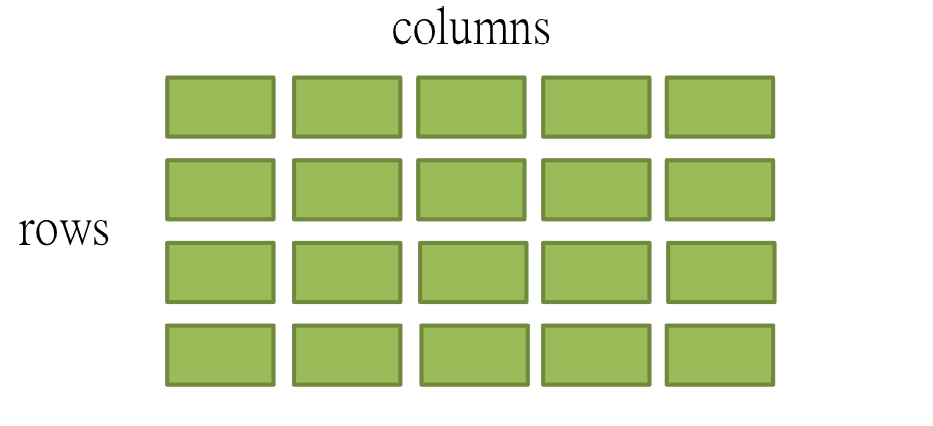
Dimension
A Matrix has two dimensions, denoted by i and j.
i for row indexing, j for column indexing.
Dimension
i alone can specify one row.

Dimension
j alone can specify one column.

Dimension
i together with j can specify one element in a matrix.
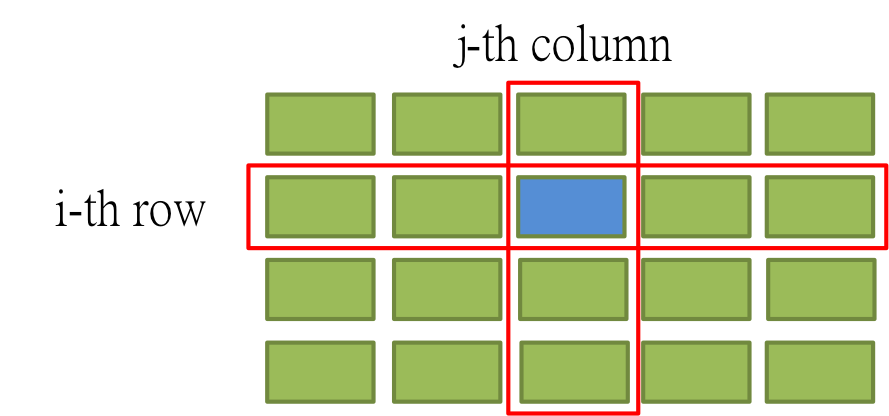
Matrix in R
Syntax: matrix(elements, nrow, ncol, byrow = FALSE)
M1 <- matrix(c(1:144), 12, 12)
Matrix: Subsetting by Index.
Syntax: my_matrix[i, ] or my_matrix[, j]
M1[6, ]
## [1] 6 18 30 42 54 66 78 90 102 114 126 138
Matrix: Subsetting by Index
M1[, 6]
## [1] 61 62 63 64 65 66 67 68 69 70 71 72
Matrix: Rename
colnames(M1) <- LETTERS[1:12]
Matrix: Subsetting by Name
M1[, 'F']
## [1] 61 62 63 64 65 66 67 68 69 70 71 72
Fun Time
What will happend to matrix Mat?
Mat <- matrix(c(1:15), 3, 5)
Mat[3, 3] <- "Ha Ha!" # t(Mat)
Mat
## [,1] [,2] [,3] [,4] [,5]
## [1,] "1" "4" "7" "10" "13"
## [2,] "2" "5" "8" "11" "14"
## [3,] "3" "6" "Ha Ha!" "12" "15"
Data Frame Subsetting - Phase I
Data Frame: First Look
We take iris data set for example
Dimension
Similer to the matrix, a data frame also has two dimensions.
Data Frame: Subsetting by Index
data(iris); iris <- iris[1:12, ];iris[6, ]
## Sepal.Length Sepal.Width Petal.Length Petal.Width Species
## 6 5.4 3.9 1.7 0.4 setosa
Data Frame: Subsetting by Index
iris[, 2]
## [1] 3.5 3.0 3.2 3.1 3.6 3.9 3.4 3.4 2.9 3.1 3.7 3.4
Data Frame: Subsetting by Column Name
iris[, "Sepal.Width"]
## [1] 3.5 3.0 3.2 3.1 3.6 3.9 3.4 3.4 2.9 3.1 3.7 3.4
Data Frame: Rename
colnames(iris) <- c("Sepal.L", "Sepal.W", "Petal.L", "Petal.W", "Species")
iris
## Sepal.L Sepal.W Petal.L Petal.W Species
## 1 5.1 3.5 1.4 0.2 setosa
## 2 4.9 3.0 1.4 0.2 setosa
## 3 4.7 3.2 1.3 0.2 setosa
## 4 4.6 3.1 1.5 0.2 setosa
## 5 5.0 3.6 1.4 0.2 setosa
## 6 5.4 3.9 1.7 0.4 setosa
## 7 4.6 3.4 1.4 0.3 setosa
## 8 5.0 3.4 1.5 0.2 setosa
## 9 4.4 2.9 1.4 0.2 setosa
## 10 4.9 3.1 1.5 0.1 setosa
## 11 5.4 3.7 1.5 0.2 setosa
## 12 4.8 3.4 1.6 0.2 setosa
One Simple Way to Construct a Data Frame.
my_list <- list(Age = c(17, 22, 38), B.Type = c("A", "B", "O"))
(my_data <- as.data.frame(my_list))
str(my_data)
## Age B.Type
## 1 17 A
## 2 22 B
## 3 38 O
## 'data.frame': 3 obs. of 2 variables:
## $ Age : num 17 22 38
## $ B.Type: Factor w/ 3 levels "A","B","O": 1 2 3
Fun Time
- 向你身邊的 5 個人詢問基本資料。(上課不忘交新朋友)
- 將得到的資料存成一個 data frame。
- 如果問不到.... NA 是你的好朋友。
Subsetting Phase II: Indices
Vector and List
Vector: Reference by Indices
In R, we use c() to specify multiple indices.
Example:
Dboy <- c(age=27, weight=82, height=172)
(Dboy)
(Dboy[c(1, 3)])
## age weight height
## 27 82 172
## age height
## 27 172
Vector: Multi Indexing with Expression
Examples:
data(cars)
speed <- cars[, "speed"]
speed[speed > 5]
## [1] 7 7 8 9 10 10 10 11 11 12 12 12 12 13 13 13 13 14 14 14 14 15 15
## [24] 15 16 16 17 17 17 18 18 18 18 19 19 19 20 20 20 20 20 22 23 24 24 24
## [47] 24 25
Vector: Multi Indexing with which()
Syntax: which(expression)
Examples:
my_vec <- runif(30, 0, 1) # 用 runif 從(0, 1)均勻分佈中抽取 30 個值。
(ind <- which(my_vec > 0.5))
(my_vec[ind])
## [1] 1 3 4 5 7 8 10 11 12 14 15 19 20 21 25 26 27
## [1] 0.7273 0.6269 0.6493 0.5838 0.7954 0.8832 0.7121 0.9923 0.7737 0.5421
## [11] 0.9414 0.6966 0.9282 0.8597 0.5213 0.7916 0.8398
Vector: Multi Indexing with which()
Syntax: which(expression)
Examples:
(ind <- which(names(Dboy) %in% c("age", "weight")))
Dboy[ind]
## [1] 1 2
## age weight
## 27 82
List: Subsetting by Indices
Similarly, we use c() for multiple indexing in a list.
Syntax: my_list[c(ind1, ind2, ...)]
Example:
Bob[c(1, 3)]
## $age
## [1] 27
##
## $favorite_data_name
## [1] "iris"
List: Subsetting with which()
Example:
(names(Bob))
(ind <- which(names(Bob) %in% c("age", "favorite_data")))
## [1] "age" "weight" "favorite_data_name"
## [4] "favorite_data"
## [1] 1 4
List: Subsetting with which()
Example:
Bob[ind]
## $age
## [1] 27
##
## $favorite_data
## Sepal.Length Sepal.Width Petal.Length Petal.Width Species
## 1 5.1 3.5 1.4 0.2 setosa
## 2 4.9 3.0 1.4 0.2 setosa
## 3 4.7 3.2 1.3 0.2 setosa
## 4 4.6 3.1 1.5 0.2 setosa
## 5 5.0 3.6 1.4 0.2 setosa
## 6 5.4 3.9 1.7 0.4 setosa
## 7 4.6 3.4 1.4 0.3 setosa
## 8 5.0 3.4 1.5 0.2 setosa
## 9 4.4 2.9 1.4 0.2 setosa
## 10 4.9 3.1 1.5 0.1 setosa
## 11 5.4 3.7 1.5 0.2 setosa
## 12 4.8 3.4 1.6 0.2 setosa
## 13 4.8 3.0 1.4 0.1 setosa
## 14 4.3 3.0 1.1 0.1 setosa
## 15 5.8 4.0 1.2 0.2 setosa
## 16 5.7 4.4 1.5 0.4 setosa
## 17 5.4 3.9 1.3 0.4 setosa
## 18 5.1 3.5 1.4 0.3 setosa
## 19 5.7 3.8 1.7 0.3 setosa
## 20 5.1 3.8 1.5 0.3 setosa
## 21 5.4 3.4 1.7 0.2 setosa
## 22 5.1 3.7 1.5 0.4 setosa
## 23 4.6 3.6 1.0 0.2 setosa
## 24 5.1 3.3 1.7 0.5 setosa
## 25 4.8 3.4 1.9 0.2 setosa
## 26 5.0 3.0 1.6 0.2 setosa
## 27 5.0 3.4 1.6 0.4 setosa
## 28 5.2 3.5 1.5 0.2 setosa
## 29 5.2 3.4 1.4 0.2 setosa
## 30 4.7 3.2 1.6 0.2 setosa
## 31 4.8 3.1 1.6 0.2 setosa
## 32 5.4 3.4 1.5 0.4 setosa
## 33 5.2 4.1 1.5 0.1 setosa
## 34 5.5 4.2 1.4 0.2 setosa
## 35 4.9 3.1 1.5 0.2 setosa
## 36 5.0 3.2 1.2 0.2 setosa
## 37 5.5 3.5 1.3 0.2 setosa
## 38 4.9 3.6 1.4 0.1 setosa
## 39 4.4 3.0 1.3 0.2 setosa
## 40 5.1 3.4 1.5 0.2 setosa
## 41 5.0 3.5 1.3 0.3 setosa
## 42 4.5 2.3 1.3 0.3 setosa
## 43 4.4 3.2 1.3 0.2 setosa
## 44 5.0 3.5 1.6 0.6 setosa
## 45 5.1 3.8 1.9 0.4 setosa
## 46 4.8 3.0 1.4 0.3 setosa
## 47 5.1 3.8 1.6 0.2 setosa
## 48 4.6 3.2 1.4 0.2 setosa
## 49 5.3 3.7 1.5 0.2 setosa
## 50 5.0 3.3 1.4 0.2 setosa
## 51 7.0 3.2 4.7 1.4 versicolor
## 52 6.4 3.2 4.5 1.5 versicolor
## 53 6.9 3.1 4.9 1.5 versicolor
## 54 5.5 2.3 4.0 1.3 versicolor
## 55 6.5 2.8 4.6 1.5 versicolor
## 56 5.7 2.8 4.5 1.3 versicolor
## 57 6.3 3.3 4.7 1.6 versicolor
## 58 4.9 2.4 3.3 1.0 versicolor
## 59 6.6 2.9 4.6 1.3 versicolor
## 60 5.2 2.7 3.9 1.4 versicolor
## 61 5.0 2.0 3.5 1.0 versicolor
## 62 5.9 3.0 4.2 1.5 versicolor
## 63 6.0 2.2 4.0 1.0 versicolor
## 64 6.1 2.9 4.7 1.4 versicolor
## 65 5.6 2.9 3.6 1.3 versicolor
## 66 6.7 3.1 4.4 1.4 versicolor
## 67 5.6 3.0 4.5 1.5 versicolor
## 68 5.8 2.7 4.1 1.0 versicolor
## 69 6.2 2.2 4.5 1.5 versicolor
## 70 5.6 2.5 3.9 1.1 versicolor
## 71 5.9 3.2 4.8 1.8 versicolor
## 72 6.1 2.8 4.0 1.3 versicolor
## 73 6.3 2.5 4.9 1.5 versicolor
## 74 6.1 2.8 4.7 1.2 versicolor
## 75 6.4 2.9 4.3 1.3 versicolor
## 76 6.6 3.0 4.4 1.4 versicolor
## 77 6.8 2.8 4.8 1.4 versicolor
## 78 6.7 3.0 5.0 1.7 versicolor
## 79 6.0 2.9 4.5 1.5 versicolor
## 80 5.7 2.6 3.5 1.0 versicolor
## 81 5.5 2.4 3.8 1.1 versicolor
## 82 5.5 2.4 3.7 1.0 versicolor
## 83 5.8 2.7 3.9 1.2 versicolor
## 84 6.0 2.7 5.1 1.6 versicolor
## 85 5.4 3.0 4.5 1.5 versicolor
## 86 6.0 3.4 4.5 1.6 versicolor
## 87 6.7 3.1 4.7 1.5 versicolor
## 88 6.3 2.3 4.4 1.3 versicolor
## 89 5.6 3.0 4.1 1.3 versicolor
## 90 5.5 2.5 4.0 1.3 versicolor
## 91 5.5 2.6 4.4 1.2 versicolor
## 92 6.1 3.0 4.6 1.4 versicolor
## 93 5.8 2.6 4.0 1.2 versicolor
## 94 5.0 2.3 3.3 1.0 versicolor
## 95 5.6 2.7 4.2 1.3 versicolor
## 96 5.7 3.0 4.2 1.2 versicolor
## 97 5.7 2.9 4.2 1.3 versicolor
## 98 6.2 2.9 4.3 1.3 versicolor
## 99 5.1 2.5 3.0 1.1 versicolor
## 100 5.7 2.8 4.1 1.3 versicolor
## 101 6.3 3.3 6.0 2.5 virginica
## 102 5.8 2.7 5.1 1.9 virginica
## 103 7.1 3.0 5.9 2.1 virginica
## 104 6.3 2.9 5.6 1.8 virginica
## 105 6.5 3.0 5.8 2.2 virginica
## 106 7.6 3.0 6.6 2.1 virginica
## 107 4.9 2.5 4.5 1.7 virginica
## 108 7.3 2.9 6.3 1.8 virginica
## 109 6.7 2.5 5.8 1.8 virginica
## 110 7.2 3.6 6.1 2.5 virginica
## 111 6.5 3.2 5.1 2.0 virginica
## 112 6.4 2.7 5.3 1.9 virginica
## 113 6.8 3.0 5.5 2.1 virginica
## 114 5.7 2.5 5.0 2.0 virginica
## 115 5.8 2.8 5.1 2.4 virginica
## 116 6.4 3.2 5.3 2.3 virginica
## 117 6.5 3.0 5.5 1.8 virginica
## 118 7.7 3.8 6.7 2.2 virginica
## 119 7.7 2.6 6.9 2.3 virginica
## 120 6.0 2.2 5.0 1.5 virginica
## 121 6.9 3.2 5.7 2.3 virginica
## 122 5.6 2.8 4.9 2.0 virginica
## 123 7.7 2.8 6.7 2.0 virginica
## 124 6.3 2.7 4.9 1.8 virginica
## 125 6.7 3.3 5.7 2.1 virginica
## 126 7.2 3.2 6.0 1.8 virginica
## 127 6.2 2.8 4.8 1.8 virginica
## 128 6.1 3.0 4.9 1.8 virginica
## 129 6.4 2.8 5.6 2.1 virginica
## 130 7.2 3.0 5.8 1.6 virginica
## 131 7.4 2.8 6.1 1.9 virginica
## 132 7.9 3.8 6.4 2.0 virginica
## 133 6.4 2.8 5.6 2.2 virginica
## 134 6.3 2.8 5.1 1.5 virginica
## 135 6.1 2.6 5.6 1.4 virginica
## 136 7.7 3.0 6.1 2.3 virginica
## 137 6.3 3.4 5.6 2.4 virginica
## 138 6.4 3.1 5.5 1.8 virginica
## 139 6.0 3.0 4.8 1.8 virginica
## 140 6.9 3.1 5.4 2.1 virginica
## 141 6.7 3.1 5.6 2.4 virginica
## 142 6.9 3.1 5.1 2.3 virginica
## 143 5.8 2.7 5.1 1.9 virginica
## 144 6.8 3.2 5.9 2.3 virginica
## 145 6.7 3.3 5.7 2.5 virginica
## 146 6.7 3.0 5.2 2.3 virginica
## 147 6.3 2.5 5.0 1.9 virginica
## 148 6.5 3.0 5.2 2.0 virginica
## 149 6.2 3.4 5.4 2.3 virginica
## 150 5.9 3.0 5.1 1.8 virginica
Matrix Subsetting - Phase II
Matrix: Subsetting with Indices
Syntax: my_matrix[c(rowind1, rowind2, ...), c(colind1, colind2, ...)]
Example
M1[c(2, 4), 2:4]
## B C D
## [1,] 14 26 38
## [2,] 16 28 40
Matrix: Subsetting with Indices
Syntax: my_matrix[c(rowind1, rowind2, ...), c(colind1, colind2, ...)]
Example:
Data Frame: Subsetting with Indices
Syntax: myDataFrame[c(rowind1, rowind2, ...), c(colind1, colind2, ...)]
Example:
data(iris); iris <- iris[1:12, ]
iris[c(2, 5), seq(from=1, to = 5, by = 2)]
## Sepal.Length Petal.Length Species
## 2 4.9 1.4 setosa
## 5 5.0 1.4 setosa
Data Frame: Subsetting with Indices
Syntax: myDataFrame[c(rowind1, rowind2, ...), c(colind1, colind2, ...)]
Example:
Merging: rbind and cbind
rbind
Merging: rbind
First Look:
Merging: rbind
- rbind: Row-like Binding (merge by column).
- Merge two data frames (or matrices) like rows.
Merging: rbind
Syntax: rbind(A, B) where A and B are two data frames or matrices
Again, let's play with iris data set.
Example:
data(iris)
iris[1:3, ]
## Sepal.Length Sepal.Width Petal.Length Petal.Width Species
## 1 5.1 3.5 1.4 0.2 setosa
## 2 4.9 3.0 1.4 0.2 setosa
## 3 4.7 3.2 1.3 0.2 setosa
Merging: rbind
Syntax: rbind(A, B) where A and B are two data frames or matrices
Again, let's play with iris data set.
Example:
iris[100:103, ]
## Sepal.Length Sepal.Width Petal.Length Petal.Width Species
## 100 5.7 2.8 4.1 1.3 versicolor
## 101 6.3 3.3 6.0 2.5 virginica
## 102 5.8 2.7 5.1 1.9 virginica
## 103 7.1 3.0 5.9 2.1 virginica
Merging: rbind
Syntax: rbind(A, B) where A and B are two data frames or matrices
Again, let's play with iris data set.
Example:
rbind(iris[1:3, ], iris[100:103, ])
## Sepal.Length Sepal.Width Petal.Length Petal.Width Species
## 1 5.1 3.5 1.4 0.2 setosa
## 2 4.9 3.0 1.4 0.2 setosa
## 3 4.7 3.2 1.3 0.2 setosa
## 100 5.7 2.8 4.1 1.3 versicolor
## 101 6.3 3.3 6.0 2.5 virginica
## 102 5.8 2.7 5.1 1.9 virginica
## 103 7.1 3.0 5.9 2.1 virginica
cbind
Merging: cbind
First Look:
Merging: cbind
- cbind: Column-like Binding (merge by row).
- Merge two data frames (or matrices) like columns.
Merging: cbind
Syntax: cbind(A, B) where A and B are two data frames or matrices
Our beloved iris data set.
Example:
iris[1:5, 2:4]
## Sepal.Width Petal.Length Petal.Width
## 1 3.5 1.4 0.2
## 2 3.0 1.4 0.2
## 3 3.2 1.3 0.2
## 4 3.1 1.5 0.2
## 5 3.6 1.4 0.2
Merging: cbind
Syntax: cbind(A, B) where A and B are two data frames or matrices
Our beloved iris data set.
Example:
iris[101:105, 1:2]
## Sepal.Length Sepal.Width
## 101 6.3 3.3
## 102 5.8 2.7
## 103 7.1 3.0
## 104 6.3 2.9
## 105 6.5 3.0
Merging: cbind
Syntax: cbind(A, B) where A and B are two data frames or matrices
Our beloved iris data set.
Example:
cbind(iris[1:5, 2:4], iris[101:105, 1:2])
## Sepal.Width Petal.Length Petal.Width Sepal.Length Sepal.Width
## 1 3.5 1.4 0.2 6.3 3.3
## 2 3.0 1.4 0.2 5.8 2.7
## 3 3.2 1.3 0.2 7.1 3.0
## 4 3.1 1.5 0.2 6.3 2.9
## 5 3.6 1.4 0.2 6.5 3.0
Fun Time
還記得剛剛我們怎麼交新朋友的嗎?
- 向剛剛問過的新朋友多問兩個額外的資料，並合併至原來的 data frame。(cbind or rbind ?)
- 再多問兩位新朋友，並把新朋友的資料合併至原來的 data frame。(cbind or rbind ?)
sort() and order()
The Difference Between sort() and order()
- sort(): sort (or order) a vector or factor (partially) into ascending or descending order.
- order(): order returns a permutation which rearranges its first argument into ascending or descending order, breaking ties by further arguments.
The Difference Between sort() and order()
Let the Code Reveals Itself
Examples:
Sepal.Length <- iris[1:12, "Sepal.Length"]
(sort(Sepal.Length))
(order(Sepal.Length))
## [1] 4.4 4.6 4.6 4.7 4.8 4.9 4.9 5.0 5.0 5.1 5.4 5.4
## [1] 9 4 7 3 12 2 10 5 8 1 6 11
Ordering by Multiple Arguments
Examples:
ind <- order(iris[1:12, "Sepal.Length"], iris[1:12, "Sepal.Width"])
(iris_ordered <- iris[ind, ])
## Sepal.Length Sepal.Width Petal.Length Petal.Width Species
## 9 4.4 2.9 1.4 0.2 setosa
## 4 4.6 3.1 1.5 0.2 setosa
## 7 4.6 3.4 1.4 0.3 setosa
## 3 4.7 3.2 1.3 0.2 setosa
## 12 4.8 3.4 1.6 0.2 setosa
## 2 4.9 3.0 1.4 0.2 setosa
## 10 4.9 3.1 1.5 0.1 setosa
## 8 5.0 3.4 1.5 0.2 setosa
## 5 5.0 3.6 1.4 0.2 setosa
## 1 5.1 3.5 1.4 0.2 setosa
## 11 5.4 3.7 1.5 0.2 setosa
## 6 5.4 3.9 1.7 0.4 setosa
Play With It And You Will Master It!
我們用房貸餘額資料來練習! (cl_info_other.csv)
之後會在 ETL 課程再度碰到它，也會學到進階的資料處理技巧。
Play With It And You Will Master It!
# read.table 小技巧。
tmp <- read.table(DSC2014Tutorial::ETL_file('cl_info_other.csv'), sep = ',',
stringsAsFactors = F, header = T, nrows = 100)
colClasses <- sapply(tmp, class)
DF <- read.table(DSC2014Tutorial::ETL_file('cl_info_other.csv'), sep = ',',
header = T, colClasses = colClasses)
Play With It And You Will Master It!
# read.table 小技巧。
tmp <- read.table(DSC2014Tutorial::ETL_file('cl_info_other.csv'), sep = ',',
stringsAsFactors = F, header = T, nrows = 100)
colClasses <- sapply(tmp, class)
DF <- read.table(DSC2014Tutorial::ETL_file('cl_info_other.csv'), sep = ',',
header = T, colClasses = colClasses)
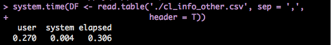
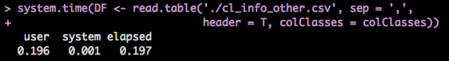
Exercises:
- 顯示 DF 前 20 筆資料與所有欄位的名稱。
- 將 mortgage_cnt < 2053 的資料另外儲存成 banks_below。
- 將 mortgage_cnt >= 22538 的資料另外儲存成 banks_above。
- 將 banks_below 與 banks_above 合併成 DF2。
- 將 DF2 先依 mortgage_cnt 再依 mortgage_bal 排序。(Hint: order)
Exercises:
- 顯示 DF 前 20 筆資料與所有欄位的名稱。
- 將 mortgage_cnt < 2053 的資料另外儲存成 banks_below。
- 將 mortgage_cnt >= 22538 的資料另外儲存成 banks_above。
- 將 banks_below 與 banks_above 合併成 DF2。
- 將 DF2 先依 mortgage_cnt 再依 mortgage_bal 排序。(Hint: order)
學員OS: 這作業實在太 trivial 了，簡直侮辱我的智慧。
Exercises:
- 顯示 DF 前 20 筆資料與所有欄位的名稱。
- 將 mortgage_cnt < 2053 的資料另外儲存成 banks_below。
- 將 mortgage_cnt >= 22538 的資料另外儲存成 banks_above。
- 將 banks_below 與 banks_above 合併成 DF2。
- 將 DF2 先依 mortgage_cnt 再依 mortgage_bal 排序。(Hint: order)
接下來的 ETL 課程保證會滿足你的渴望!
Useful Functions
給定一個名叫 data 的 data frame (matrix)
names(data): 傳回 data 的所有欄位名稱。
nrow(data)/ncol(data): 傳回 data 的列 / 行數目。
dim(data)
head(data, n)/tail(data, n)/View(data)
Factor
Factor: First Look
(Petal.W <- as.factor(iris[1:12, "Petal.Width"]))
## [1] 0.2 0.2 0.2 0.2 0.2 0.4 0.3 0.2 0.2 0.1 0.2 0.2
## Levels: 0.1 0.2 0.3 0.4
Factor: First Look
(Petal.W <- as.factor(iris[1:12, "Petal.Width"]))
## [1] 0.2 0.2 0.2 0.2 0.2 0.4 0.3 0.2 0.2 0.1 0.2 0.2
## Levels: 0.1 0.2 0.3 0.4
有啥特別的? 不就多個 levels 嗎? 跟向量不是差不多?
Factor: First Look
(Petal.W <- as.factor(iris[1:12, "Petal.Width"]))
## [1] 0.2 0.2 0.2 0.2 0.2 0.4 0.3 0.2 0.2 0.1 0.2 0.2
## Levels: 0.1 0.2 0.3 0.4
同款就不同師父啊(台)
Try This Code
Which is the correct outcome?
- 0.2 0.2 0.2 0.2 0.2 0.4 0.3 0.2 0.2 0.1 0.2 0.2
- "I" "love" "data" "science" "It's" "the" "coolest" "thing" "ever"
- 2 2 2 2 2 4 3 2 2 1 2 2
- None of above.
Just try it!
Factor in R is a key-value mapping.
The Answer
This is what you really get:
Petal.W
as.numeric(Petal.W)
## [1] 0.2 0.2 0.2 0.2 0.2 0.4 0.3 0.2 0.2 0.1 0.2 0.2
## Levels: 0.1 0.2 0.3 0.4
## [1] 2 2 2 2 2 4 3 2 2 1 2 2
A Closer Look
Vector in R
A Closer Look
Factor in R: A Key-Value Mapping
Build-in Function: factor()
Syntax: factor(x)
Build-in Function: factor()
Syntax: factor(x)
Example:
test_factor <- c(1, 3, 3, 5, 2, 4, 2, 5)
test_factor <- factor(test_factor)
Build-in Function: factor()
Syntax: factor(x)
Example:
test_factor
## [1] 1 3 3 5 2 4 2 5
## Levels: 1 2 3 4 5
Build-in Function: factor()
Syntax: factor(x)
Example:
levels(test_factor) <- c("A", "B", "C", "D", "E")
test_factor
## [1] A C C E B D B E
## Levels: A B C D E
Pop Quiz
How can we correctly convert a factor into a vector?
Q: my_factor <- factor(seq(10, 1, -1))
1. my_vec <- seq(10, 1, by = -1)
my_vec[c(3, 3, 5, 1, 6)]
2. levels(my_factor): this will give you a vector of levels of a factor.
my_factor <- factor(seq(10, 1, -1))
Levels <- levels(my_factor)
my_vector <- Levels[as.numeric(my_factor)]
Loops
For Loop
For Loop
Syntex:
for (iterator){
#Do something here....
}
Example: 土炮 sum()
# 從 1 加到 10
final_result <- 0
for (i in 1:10){
final_result <- final_result + i
}
final_result
## [1] 55
剛剛的例子有點兒無聊....
# 讓 R 幫你驅邪避凶!!
# This is for Mac.
for (i in 1:5){
system("say 'Nann Moll Ah Mi Tow Fo'")
system("say 'Ah Men'")
}
# This is for Ubuntu.
for (i in 1:5){
system("espeak 'Nann Moll Ah Mi Tow Fo'")
system("espeak 'Ah Men'")
}
# This is for Windows.
for (i in 1:5){
system("espeak NannMollAhMiTowFo")
system("espeak AhMen")
}
If Loop
If Loop
if / else
Syntex:
if (condition_1){
#Do something here....
} else if (conditon_2){
#Do something here
} else {
#Do something here
}
Note: else if and else are optional.
Exercise: SVM Classifier
Magic Vector:
c(1.45284450, -0.04625854, 0.5211828, -1.003045, -0.4641298)
Exercise: SVM Classifier
Magic Vector:
c(1.45284450, -0.04625854, 0.5211828, -1.003045, -0.4641298)
(暫時)不要問我怎麼把這個向量生出來的。(汗)
Exercise: SVM Classifier
Magic Vector:
c(1.45284450, -0.04625854, 0.5211828, -1.003045, -0.4641298)
或許你可以問助教，助教什麼都會!
Exercise: SVM Classifier
One simple way to get the data if you're using our package.
data("RBasic_ForLoop_Ex")
Exercise: SVM Classifier
- 計算 X1 中某一筆資料與 magic_vector 內積的結果，並儲存為 inner。
( sum(X1[i, ] * magic_vector), i 可以是1~100任何一個整數 ) - 如果 inner 大於或等於 0，print('setosa');反之，print('versicolor')
- 執行 print(y1[i])，有何發現？
Exercise: SVM Classifier
其他更精彩的資料分析模型的理論與操作，敬請期待 Data Analysis 課程!
While Loop
While Loop
Syntex:
while (condition_1){
#Do something here....
}
Example:
while (T){
handsome <- readline('Are you handsome?[yes or no] ')
if (handsome == 'yes'){
print('Really....!?')
} else {
print('Now we are talking.')
break
}
}
While Loop (Cont.)
While Loop (Cont.)
Exercise
- 那如果要把上述程式改成電腦不斷詢問 "Do you like to code?" 呢?
- 至於要回答 'yes' or 'no' 才會停....
- 這個 while 迴圈有一點小問題，來想想要怎麼解決吧!
Basic Operation - Phase II
Arithmetic Operations
+, -, *, /, %/%, %%
All these operations are vectorized. (element-by-element operation)
Examples:
my_vec1 <- c(1, 3, 5, 7); my_vec2 <- c(2, 4, 6, 8)
(my_vec1 + my_vec2)
(my_vec1 * my_vec2)
## [1] 3 7 11 15
## [1] 2 12 30 56
Matrix Operations: Multiplication and Transpose
Syntax: matrix1 %*% matrix2
Example:
set.seed(3690)
my_mat1 <- matrix(c(1:6), 2, 3)
my_mat2 <- matrix(runif(6), 3, 2)
(my_mat1 %*% my_mat2)
## [,1] [,2]
## [1,] 5.577 5.534
## [2,] 7.263 7.478
Matrix Operations: Solving Linear System
Syntax: solve(A, b)
Given a linear system like this:
\[
A x = b
\]
solve() will return:
\[ x^*= A^{-1} b \]
Matrix Operations: Solving Linear System
Examples:
(A <- matrix(runif(9), 3, 3))
(A_inv <- solve(A))
## [,1] [,2] [,3]
## [1,] 0.4278 0.95646 0.05677
## [2,] 0.8543 0.06763 0.81184
## [3,] 0.5929 0.76707 0.11537
## [,1] [,2] [,3]
## [1,] -4.458 -0.4842 5.601
## [2,] 2.775 0.1138 -2.166
## [3,] 4.460 1.7318 -5.713
Matrix Operations: Solving Linear System
Examples:
(A %*% A_inv)
## [,1] [,2] [,3]
## [1,] 1.00e+00 -4.163e-17 -6.106e-16
## [2,] 0.00e+00 1.000e+00 0.000e+00
## [3,] -2.22e-16 5.551e-17 1.000e+00
Matrix Operations: Solving Linear System
Examples:
b <- c(1, 2, 3)
A_inv_b <- solve(A, b)
A %*% A_inv_b
## [,1]
## [1,] 1
## [2,] 2
## [3,] 3
Matrix Operations: Solving Linear System
Examples:
b <- c(1, 2, 3)
A_inv_b <- solve(A, b)
A %*% A_inv_b
## [,1]
## [1,] 1
## [2,] 2
## [3,] 3
It's time for mini project!
Mini Project I: Barnsley Fern Fractal
Mini Project I: Barnsley Fern Fractal
起始點: 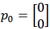
With 5% probability: 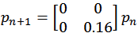
With 81% probability: 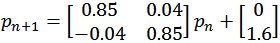
With 7% probability: 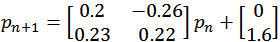
With 7% probability: 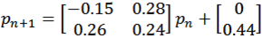
Barnsley Fern Fractal
依此規則迭代出 40000 點，再把這些點畫成圖。
只要用我們有學過的 for/if 迴圈和矩陣運算就可以做到這件事。
你應該會看到:

Barnsley Fern Fractal: Tips
可以把迭代出來的點用一個 data.frame 存起來。(例如說存成 coor )
最後用 plot(x = coor[, 2], y = coor[, 1], plt = c(0, 10, -5, 5), cex = 0.1, asp = 1) 把它畫出來。
這些參數不懂沒關係，它們的唯一功能就只是讓圖變漂亮而已。(很多我也是 Google 來的XD)
Barnsley Fern Fractal: Template
One simple way to open the template if you're using our package.
path <- DSC2014Tutorial::Basic_file("barnsley_fern_template.R")
utils::browseURL(path)
Barnsley Fern Fractal: Template
One simple way to open the template if you're using our package.
path <- DSC2014Tutorial::Basic_file("barnsley_fern_template.R")
utils::browseURL(path)
敬請期待 Data Visualization 教學課程。
Barnsley Fern Fractal: The Answer
Reference answer.
path <- DSC2014Tutorial::Basic_file("barnsley_fern_answer.R")
utils::browseURL(path)
Function
Define Your Own Function
Syntex:
my_function <- function(arg1, arg2 = arg2_default, ...){
# do something here
# return the result. (optional)
}
- 如果在最後沒有 return() ，R 會自動回傳最後一次運算的結果。
- 強烈建議習慣性寫上 return()。
Define Your Own Operation
`%Q_Q%` <- function(x, y){
return(2*x + 5*y)
}
2 %Q_Q% 3
## [1] 19
Define Your Own Operation
`%(= ww =)%` <- function(x, y, z=3){
return(x + 2*y + z)
}
2 %(= ww =)% 3
## [1] 11
Default Values and Scoping Rule
We use following example to demostrate how to set default values in function and the basic scoping rule in R.
MyFunction <- function(x, y, z=3, ...){
print("x, y, z:")
print(c(x=x, y=y, z=z))
print("The rest of args:")
print(c(...))
return(x + 2*y + 6*z + sum(...))
}
Default Values and Scoping Rule
MyFunction(x=1, y=3) # It works without z!! (By "default", z = 3)
## [1] "x, y, z:"
## x y z
## 1 3 3
## [1] "The rest of args:"
## NULL
## [1] 25
Default Values and Scoping Rule
MyFunction(1, 3, 5, 2, 9)
## [1] "x, y, z:"
## x y z
## 1 3 5
## [1] "The rest of args:"
## [1] 2 9
## [1] 48
Default Values and Scoping Rule
MyFunction(1, 3, 5, 2, z = 9)
## [1] "x, y, z:"
## x y z
## 1 3 9
## [1] "The rest of args:"
## [1] 5 2
## [1] 68
Default Values and Scoping Rule
MyFunction(1, 3, 5, y = 2, x = 9)
## [1] "x, y, z:"
## x y z
## 9 2 1
## [1] "The rest of args:"
## [1] 3 5
## [1] 27
Default Values and Scoping Rule
MyFunction(1, 3, 5, y = 2, x = 9)
## [1] "x, y, z:"
## x y z
## 9 2 1
## [1] "The rest of args:"
## [1] 3 5
## [1] 27
It is time for Mini Project II!
Mini Project II - Battleship
Mini Project II - Battleship
Battleship: Tips
接下來我們將一步步指導該如何造出這個 battleship()。
首先由電腦決定一個座標。
定義一個 list 變數 map 如下
map =list(c('O', 'O', 'O', 'O', 'O'),
c('O', 'O', 'O', 'O', 'O'),
c('O', 'O', 'O', 'O', 'O'),
c('O', 'O', 'O', 'O', 'O'),
c('O', 'O', 'O', 'O', 'O'))
用一個 for 迴圈把 map 中的每一個項目 print 出來。
定義一個變數 trial 並給予初始值 0 。(此變數將用於記錄玩家已經試過幾次)
用一個 while 迴圈來判斷 trial 是否超過可嘗試次數。如果沒有，更新 map 並顯示適當訊息。若已超過， break 當前迴圈。
Battleship: Template
One simple way to open the template file if you are using our package.
path <- DSC2014Tutorial::Basic_file("battleship_template.R")
## Error: there is no package called 'DSC2014Tutorial'
utils::browseURL(path)
Some Function You Might Need
- readline(msg)
readline('Are you a girl?') # readline() 會把輸入的資料存成字串。
- sample.int(x, size)
sample.int(5, 1) # 從 1~5 中隨機抽取 1 個數字。
## [1] 4
- cat():
print('I love R!'); cat('I love R!')
## [1] "I love R!"
## I love R!
Battleship 成品範例
path <- DSC2014Tutorial::Basic_file("battleship_answer.R")
## Error: there is no package called 'DSC2014Tutorial'
utils::browseURL(path)
Help Yourself by Yourself
Why?
- By this time, you are already a R user.
- However, life sucks. Bugs and problems are everywhere.
- No one can give you a hand if you does not reach out.
But How?
- ?/??: helper function in R.
- Stack overflow